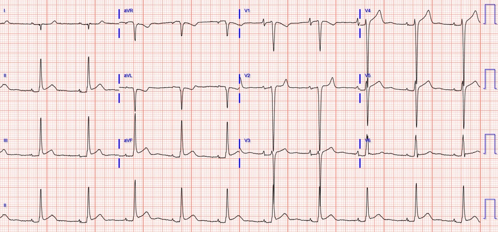
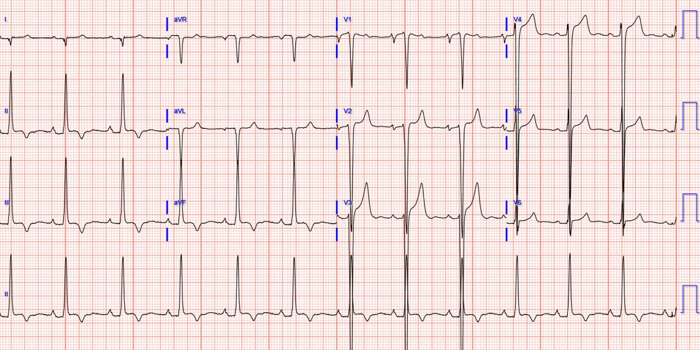
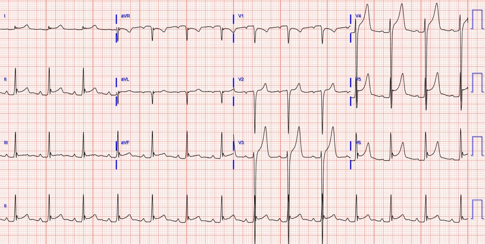
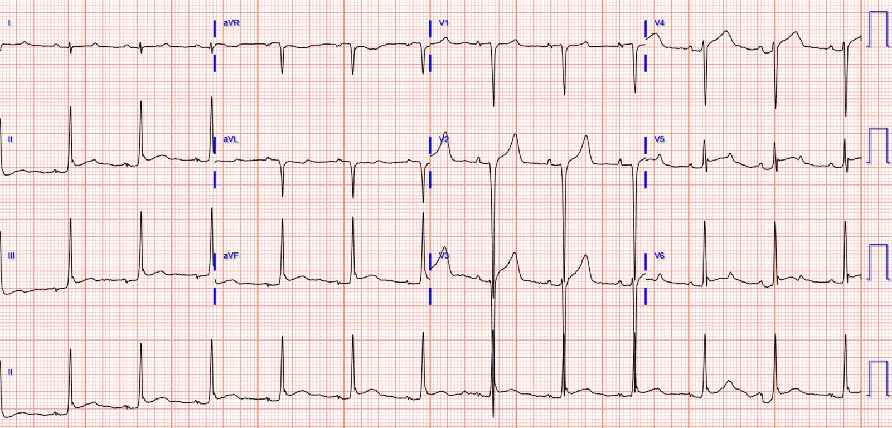
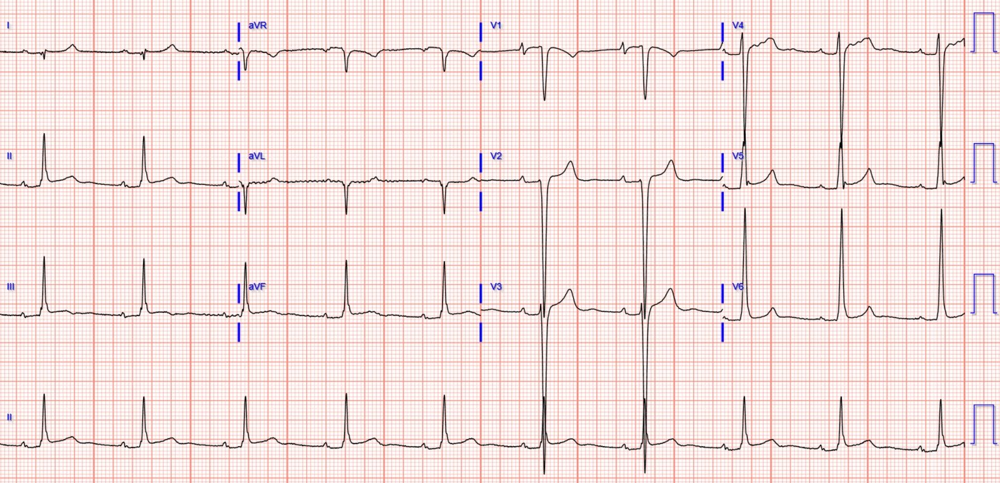
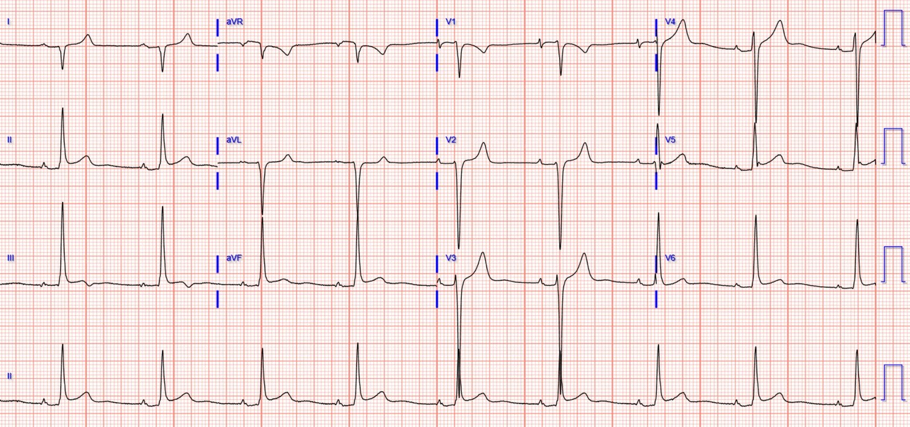
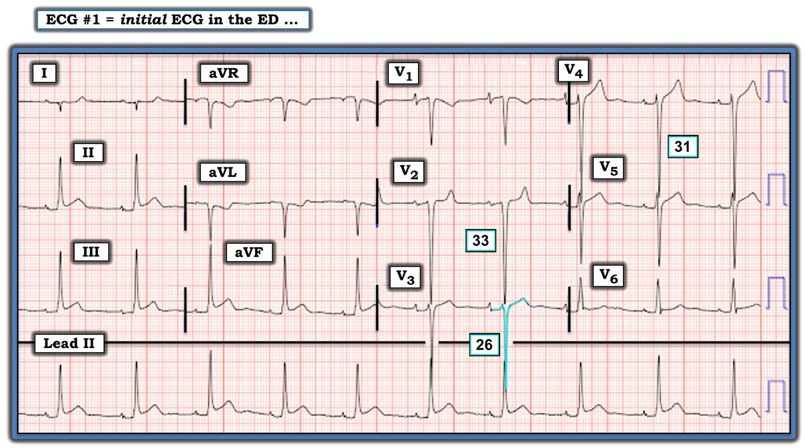

17/06/2022 — Một người đàn ông ở độ tuổi 30 bị đau ngực và siêu âm tim tại giường bình thường, không có rối loạn vận động thành
Bản dịch tiếng Việt của bài "A man in his 30s with chest pain and a normal bedside echo, without wall motion abnormality" – Dr. Smith’s ECG Blog. Giữ nguyên toàn bộ 8 hình ảnh của bản gốc.
Bài gửi và viết bởi Dominic Nicacio MD, bình duyệt bởi Meyers, McLaren, Grauer, Smith
Một người đàn ông ở độ tuổi đầu ba mươi, tiền sử hẹp van động mạch chủ bẩm sinh đã thay van cơ học, đến khoa cấp cứu (ED) vì cảm giác khó chịu ở ngực khởi phát cấp tính, bắt đầu vào khoảng 18:00 khi đang đi bộ. Cảm giác khó chịu ở ngực lan lên hàm, kèm khó thở và choáng váng. Cơn đau liên tục và không giảm khi nghỉ. Gần đây không sốt, không ho, không nghẹt mũi, không buồn nôn, không vã mồ hôi, không đau bụng. Bệnh nhân thừa nhận đã không dùng warfarin theo chỉ định cho van cơ học của mình.
Dấu hiệu sinh tồn lúc phân loại: huyết áp 152/57, nhiệt độ 97,6 F, nhịp tim 62, nhịp thở 18, O2 100%
Điện tâm đồ lúc phân loại (triage) (1,5 giờ sau khi khởi phát đau):


Có ba điện tâm đồ cũ trong hồ sơ (tiếc là không có thông tin lâm sàng đi kèm các điện tâm đồ này):
Điện tâm đồ cũ #1 (4 năm trước):


Điện tâm đồ cũ #2 (12 năm trước):


Điện tâm đồ cũ #3 (cũng 12 năm trước):


Nhận xét của Meyers về điện tâm đồ:
Điện tâm đồ lúc phân loại (ở đầu bài) cho thấy nhịp xoang, phì đại thất trái (LVH) và ST chênh lên (STE) ở II, III, aVF, V3-V5. Có ST chênh xuống (STD) soi gương ở I và aVL. Mối lo ngại cho đến khi chứng minh được điều ngược lại là OMI liên quan ít nhất đến các chuyển đạo thành dưới. So sánh với điện tâm đồ cũ #1 củng cố mối lo ngại ở các chuyển đạo thành dưới, nhưng điều thú vị là điện tâm đồ cũ #3 dường như có một số đặc điểm tương tự nhưng ít rõ rệt hơn. Dù vậy, những dấu hiệu này phải được xem là OMI cho đến khi chứng minh được điều ngược lại.
Khám: trông thoải mái, không có gì đặc biệt ngoại trừ tiếng thổi tâm thu của van cơ học
Siêu âm tại giường:
Không có dịch màng ngoài tim, không có vạt bóc tách ở động mạch chủ xuống
Chức năng tâm thu thất trái/thất phải nhìn chung bình thường
Không có dấu hiệu tăng gánh thất phải
Không thấy rối loạn vận động thành (WMA) trên mặt cắt trục dọc cạnh ức (hạn chế) và mặt cắt trục ngắn cạnh ức (chất lượng cao) (không lấy được mặt cắt từ mỏm)
Tĩnh mạch chủ dưới (IVC) xẹp được
X-quang ngực:
Sung huyết mạch máu trung tâm nhẹ
Chỉ thép mở dọc xương ức
Bóng tim to nhẹ
Không tràn khí màng phổi
Trung thất có vẻ trong giới hạn bình thường
Dựa trên bệnh sử và các điện tâm đồ ở trên, phòng thông tim (cath lab) được kích hoạt trong vòng khoảng 15 phút sau khi bệnh nhân đến viện.
Thông tim:
Tổn thương LAD đoạn xa/vùng mỏm hẹp 100% với dòng chảy TIMI 0, nhiều khả năng do thuyên tắc huyết khối mạch vành từ van động mạch chủ cơ học với INR = 1,0. Nhồi máu cơ tim típ 2 do thuyên tắc huyết khối mạch vành. Tái thông mạch thành công bằng nong bóng, phục hồi dòng chảy TIMI-3. Không thấy bệnh lý ở các động mạch vành khác. LAD đoạn xa được tái thông bằng nong bóng, phục hồi dòng chảy TIMI-3.
Troponin ban đầu = 10 ng/L (URL bách phân vị 99% = 20 ở nam giới đối với xét nghiệm này)
Bệnh nhân được tiếp tục dùng heparin rồi chuyển lại sang warfarin liều điều trị.
Điện tâm đồ ghi lại sau thông tim:


Điện tâm đồ ghi lại ngày hôm sau:


Không ghi thêm điện tâm đồ nào nữa.
Troponin xét nghiệm lại:
2.160 ng/L
8.095 ng/L
7.572 ng/L
Siêu âm tim:
Buồng thất trái giãn mức độ vừa đến nặng. Bề dày thành bình thường. Chức năng tâm thu bình thường. Phân suất tống máu 67%. Không có rối loạn vận động thành khu trú theo từng vùng.
Diễn biến tại bệnh viện:
Bệnh nhân được tiếp tục truyền heparin và chuyển sang warfarin. Siêu âm tim qua thành ngực cho thấy buồng thất trái giãn mức độ vừa đến nặng, EF 67%. Van động mạch chủ có hở cạnh van nặng, van tim cơ học hoạt động bình thường. Siêu âm tim qua thực quản cho thấy 2 khối tăng âm di động, nghi huyết khối hoặc sùi, ở đường ra thất trái và động mạch chủ lên. Cấy máu không mọc vi khuẩn sau 4 ngày. Bệnh nhân xuất viện về nhà trong tình trạng tốt.
Những điểm cần học:
Tùy thuộc vào người thực hiện và người đọc, điện tâm đồ có thể nhạy hơn hoặc không nhạy hơn siêu âm tim trong phát hiện OMI. Để đạt độ nhạy đầy đủ, siêu âm tim phải được khảo sát trên tất cả các vùng!
Cẩn thận: siêu âm tim, và đặc biệt là siêu âm tim tại giường, có thể cho kết quả âm tính giả!!
Ngay cả siêu âm tim cản âm vi bọt (bubble contrast) chính thức cũng có thể cho kết quả âm tính giả đối với hội chứng vành cấp (ACS) cần điều trị cấp cứu!!
Xem bài này: What do you think the echocardiogram shows in this case? (Bạn nghĩ siêu âm tim trong ca này cho thấy gì?)
Và bài này: Wait until after the ECG to give Nitroglycerine (Hãy đợi ghi điện tâm đồ xong rồi mới cho nitroglycerin)
Ca bệnh này
Lưu ý rằng ca OMI này có troponin ban đầu trong giới hạn bình thường vào thời điểm khoảng 1,5 giờ sau khi khởi phát đau ngực.
Nhồi máu cơ tim cấp (AMI) típ 1 có cơ chế là nứt vỡ mảng xơ vữa và hình thành huyết khối gây thiếu máu cục bộ mạch vành. AMI típ 2 loại trừ nứt vỡ mảng xơ vữa, và về cơ bản bao gồm mọi cơ chế mất cân bằng cung-cầu khác gây AMI. Ca thuyên tắc mạch vành này được xem là AMI típ 2.
Tế bào cơ tim không thể “phân biệt” giữa các nguyên nhân khác nhau gây tắc mạch vành cấp. Bất kỳ tình trạng nào gây tắc mạch vành cấp và ngừng dòng máu ngay lập tức đều có thể gây ra diễn tiến điện tâm đồ của OMI. Ca này sẽ được xếp vào OMI “típ 2”.
Chuyển đạo aVL hầu như luôn có ST chênh xuống soi gương và/hoặc sóng T đảo ngược (TWI) khi có các dấu hiệu OMI ở các chuyển đạo thành dưới.
Các chuyển đạo thành dưới phản ánh các dấu hiệu từ một vùng cơ tim rộng hơn chứ không chỉ riêng thành dưới thất trái. Chúng tôi cho rằng, nói chung, mỏm thất trái, phần dưới vách liên thất và một phần thất phải cũng tạo ra thay đổi điện tâm đồ ở các chuyển đạo thành dưới. Trong ca này, tôi tin rằng mỏm thất trái đang nhồi máu là nguồn gốc của ST chênh lên. Chúng tôi đã chủ động quan sát thành dưới thất trái trên mặt cắt trục ngắn cạnh ức theo thời gian thực bằng siêu âm tại giường, và thấy thành này co bóp bình thường, không có rối loạn vận động thành. Chúng tôi không lấy được mặt cắt mỏm tốt. Điều thú vị là siêu âm tim chính thức cũng không cho thấy rối loạn vận động thành nào.
LVH có thể giả OMI và ngược lại làm cho OMI khó nhận ra hơn. Tiêu chuẩn STEMI được định nghĩa khi không có LVH, nghĩa là STEMI không có định nghĩa hay tiêu chuẩn nào trong các trường hợp có LVH. Khi LVH đáng kể kèm bất thường tái cực, ST chênh xuống ngược hướng phù hợp ở các chuyển đạo bên và ST chênh lên ở các chuyển đạo trước tim bên phải thường gây báo động về thiếu máu cục bộ và dẫn đến kích hoạt phòng thông tim dương tính giả.
So sánh điện tâm đồ hiện tại với điện tâm đồ cũ có những hạn chế quan trọng! Đừng mặc định rằng điện tâm đồ “cũ” là điện tâm đồ “nền”. Bạn cũng phải biết những sự kiện diễn ra lúc ghi điện tâm đồ cũ thì mới có thể so sánh nó với điện tâm đồ hiện tại. Ba điện tâm đồ “cũ” có được trong ca này đều khá khác nhau – điều này nhấn mạnh sự cần thiết phải hiểu bối cảnh của chúng chi tiết hơn những gì chúng tôi có được trong ca này.
Bất kể điện tâm đồ thế nào, bệnh nhân này có triệu chứng hội chứng vành cấp điển hình, đau kiểu thiếu máu cục bộ đang tiếp diễn và troponin tăng dần. Ngay cả khi không có điện tâm đồ trong ca này, chúng ta phải nhớ rằng chẩn đoán OMI có thể được đặt ra và củng cố bằng nhiều đặc điểm lâm sàng khác.

===================================
Bình luận của KEN GRAUER, MD (17/6/2022):
===================================
Một ca bệnh tuyệt vời của BS. Nicacio và BS. Meyers — nhấn mạnh một số điểm lâm sàng quan trọng đáng được nhắc lại:
- Tôi đã đưa lại điện tâm đồ ban đầu ở Hình 1. Mặc dù tôi không bị điện tâm đồ này thuyết phục ngay rằng đang có một OMI cấp — chỉ định thông tim sớm vẫn rất rõ ràng, vì bệnh sử của bệnh nhân là điển hình của hội chứng vành cấp — và cơn đau ngực mang tính chất thiếu máu cục bộ của bệnh nhân không thuyên giảm.
- Dù việc có sẵn các bản ghi cũ hữu ích đến đâu trong việc xác định các dấu hiệu điện tâm đồ là “mới” hay “cũ” — tôi thấy 3 điện tâm đồ cũ trong hồ sơ của bệnh nhân này gây bối rối. Mỗi bản cho một hình ảnh điện tâm đồ hơi khác nhau, bao gồm: i) Thay đổi trục mặt phẳng trán; ii) Biên độ QRS khác nhau; và, iii) Thay đổi hình thái ST-T, với ST chênh lên trên các bản ghi xa hơn — nhưng sóng T đảo ngược khá sâu ở các chuyển đạo thành dưới trên điện tâm đồ gần hơn, ghi 4 năm trước. Như BS. Nicacio và BS. Meyers đã nêu — việc không biết hoàn cảnh lâm sàng tại thời điểm ghi các bản ghi cũ với những dấu hiệu điện tâm đồ khác nhau này — khiến khó biết được sự khác biệt giữa điện tâm đồ ban đầu trong ca hôm nay so với các điện tâm đồ cũ của bệnh nhân mang ý nghĩa gì (nếu có).
- ĐIỂM THEN CHỐT (PEARL): Qua nhiều năm, với những bệnh nhân có nhiều điện tâm đồ trong hồ sơ, tôi thấy hữu ích — việc lướt nhanh qua một số bản ghi cũ mang tính đại diện của họ. Việc này có thể làm nhanh đến bất ngờ một khi bạn đã quen với “khuôn mẫu” của chính bệnh nhân đó. Ví dụ, đôi khi tôi gặp một bệnh nhân có bệnh tim đã biết với sóng T đảo ngược lan tỏa — rồi trở về bình thường ở bản ghi kế tiếp — để rồi theo thời gian luân phiên giữa một hình ảnh trông như thiếu máu cục bộ và một hình ảnh không như vậy. Nhận thức được rằng sự thay đổi hình thái ST-T theo thời gian như vậy có thể xảy ra ở một bệnh nhân nhất định (tương tự như khi so sánh 3 bản ghi cũ trong ca hôm nay) — giúp có thêm góc nhìn về cách diễn giải khi so sánh với điện tâm đồ mới nhất.
Điện tâm đồ ban đầu trong ca hôm nay:
Tôi thấy điện tâm đồ ban đầu ở Hình 1 vừa hấp dẫn vừa khó hiểu. Như BS. Nicacio và BS. Meyers đã nêu — sự hiện diện của LVH có thể khiến chẩn đoán OMI khó khăn hơn nhiều. Các lực ưu thế hướng ra sau (do thất trái lớn) thường sẽ làm giảm biên độ sóng r ở các chuyển đạo trước (nếu không tạo hẳn ra phức bộ QS ở các chuyển đạo trước). Ngoài ra — LVH rõ rệt biểu hiện bằng sóng S sâu ở các chuyển đạo trước thường sẽ đi kèm ST chênh lên ở các chuyển đạo trước (tức là, “hình soi gương” của “tăng gánh” thất trái, mà ở các chuyển đạo ngực bên biểu hiện là ST-T chênh xuống — như trong Bình luận của tôi ở bài ngày 20 tháng Sáu năm 2020 trên Dr. Smith’s ECG Blog).
- Mặc dù bệnh nhân hôm nay là một người trẻ ở độ tuổi 30 — anh ấy có tiền sử bệnh tim lâu năm (tức là, hẹp van động mạch chủ bẩm sinh phải thay van). Vì vậy không có gì ngạc nhiên khi tiêu chuẩn điện tâm đồ của LVH được thỏa mãn dễ dàng với dấu hiệu sóng S ở chuyển đạo ngực sâu vượt mức (tức là, 33, 26 và 31 mm ở các chuyển đạo V2, V3, V4) — kèm vùng chuyển tiếp bị chậm đến tận chuyển đạo V6 do sóng S chiếm ưu thế rõ rệt như vậy ở các chuyển đạo trước tim.
- Dấu hiệu đáng lo ngại nhất trên điện tâm đồ #1 là ST chênh lên ở mỗi chuyển đạo thành dưới — với thay đổi soi gương ở các chuyển đạo bên cao I và aVL. Tuy vậy, xét mức độ tăng biên độ QRS rõ rệt do LVH — tôi cho rằng mức độ ST chênh lên ở các chuyển đạo thành dưới là tương đối khiêm tốn (và ít hơn một chút, nhưng ngoài ra không khác biệt nhiều so với hình ảnh ST-T ở các chuyển đạo chi trên điện tâm đồ cũ #3).
“Hình dạng“ của ST-T ở mỗi chuyển đạo trong 6 chuyển đạo ngực của điện tâm đồ #1 đều khác nhau — đến mức tôi không chắc nên diễn giải các dấu hiệu này như thế nào.
- Sóng T đảo ngược ở chuyển đạo V1 không nhất thiết là bất thường. Nhưng tôi thấy “gờ” nằm ngang của đoạn ST ở chuyển đạo V2 (trước khi kết thúc bằng một sóng T nhọn riêng biệt) trông lạ — và hoàn toàn không điển hình cho hình ảnh “tăng gánh” thất trái ở các chuyển đạo trước.
- Tôi cho rằng hình ảnh ST-T ở chuyển đạo V3 và V4 phù hợp với “tăng gánh” thất trái — mặc dù tôi không chắc tại sao với độ sâu sóng S tương tự nhau, sóng T ở chuyển đạo V4 lại nhọn rõ rệt hơn nhiều so với ở chuyển đạo V3.
- Sau đó đoạn khởi đầu ST ở chuyển đạo V5 trở nên thẳng đuỗn — nhưng với điểm J chênh lên khiêm tốn ở chuyển đạo này cùng sóng S 19 mm, tôi lại không chắc chắn trong việc phân biệt “tăng gánh” thất trái với ST chênh lên do OMI.
- Sau đó đoạn ST trở nên dẹt ở chuyển đạo V6 — nhưng tôi tự hỏi liệu sự chuyển tiếp từ sóng S chiếm ưu thế ở các chuyển đạo trước tim sang sóng R tương đối nhỏ ở chuyển đạo V6 có thể giải thích điều này hay không.


Tôi thấy 2 dấu hiệu điện tâm đồ khác đáng chú ý ở Hình 1:
- Có RAD (trục lệch phải – Right Axis Deviation) chắc chắn — xác định dựa trên phức bộ QRS nhỏ nhưng âm hoàn toàn ở chuyển đạo I. Việc sóng P ở chuyển đạo I dương — cùng với âm toàn bộ (sóng P, QRS và sóng T) ở chuyển đạo aVR — có nghĩa đây không phải là đảo điện cực LA-RA. Thay vào đó, từ góc độ đọc điện tâm đồ “thuần túy” — sự hiện diện của RAD đi kèm điện thế LVH rõ rệt cần ngay lập tức gợi ý khả năng có RVH. Nghi ngờ RVH là thêm một lý do khiến tôi không chắc chắn khi đánh giá mức độ cấp tính của điện tâm đồ ban đầu này. (Cần lưu ý rằng siêu âm tim sau đó không cho thấy dấu hiệu tăng gánh thất phải.).
- Hình thái sóng P rất bất thường. Tất cả sóng P ở các chuyển đạo chi đều có biên độ cực thấp — với một sóng P rất nhỏ, có khía kỳ dị ở chuyển đạo II. Thế nhưng sóng P ở chuyển đạo V1 lại rất lớn — với phần dương ban đầu cao và nhọn. Đây có phải là nhịp xoang? Hay một nhịp nhĩ lạc chỗ? Hay — dù thời gian sóng P không kéo dài — khía sóng P kín đáo ở nhiều chuyển đạo có phản ánh một dạng rối loạn dẫn truyền trong nhĩ nào đó?
Tóm lại — xin CẢM ƠN BS. Nicacio và BS. Meyers đã trình bày ca bệnh hôm nay. Dù tôi thấy điện tâm đồ ban đầu thú vị đến đâu — điểm MẤU CHỐT của ca hôm nay là việc nhận ra các dấu hiệu điện tâm đồ đáng ngờ (dù chưa chắc chắn) ở bệnh nhân có đau ngực điển hình không thuyên giảm này đã đủ để thông tim kịp thời (được thực hiện trong vòng 15 phút sau khi đến khoa cấp cứu) — và điều này đã xác nhận nhu cầu tái thông mạch sớm.